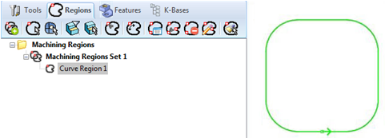
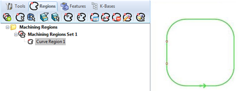
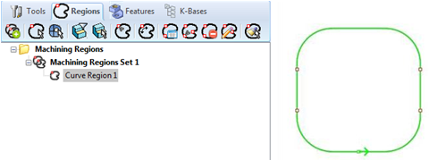

Allows you to manually select bridge points on curve region. Bridge points can be set for open and closed curves.
Allows you to manually select bridge points on curve region. Bridge points can be set for open and closed curves.
Select a Curve Region under Regions tab and click Manual Bridge Points on Selections 
You will now be prompted to pick bridge point on selected curve/region.

You will now be prompted to pick bridge point on selected curve/region.
Click on the curve and a bridge point is inserted.

Click on the curve and a bridge point is inserted.
Above example shows manual bridge points selection in progress where 2 points have been selected.
Repeat by clicking on the curve to add additional bridge points.
Right Mouse button click to end.

Right Mouse button click to end.
A total of 4 bridge points have been manually specified for the above curve region.